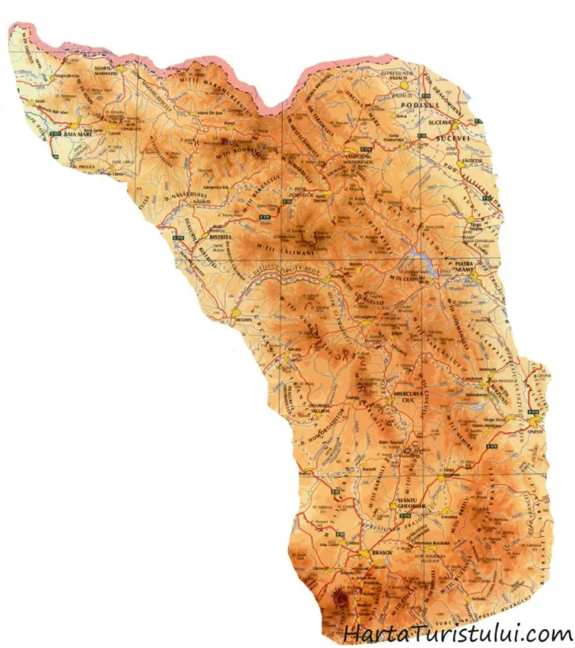
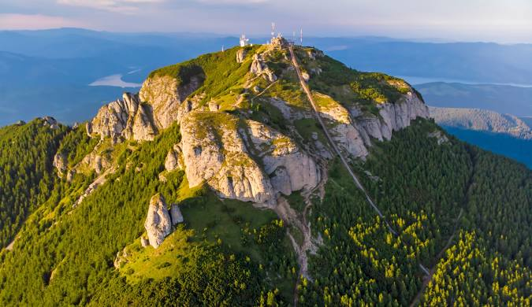
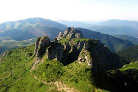
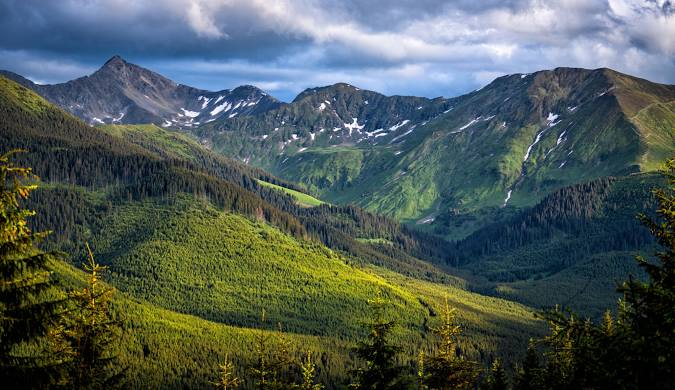
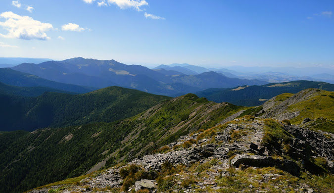
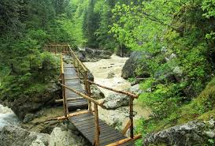

Carpații Orientali, unul din cele trei mari segmente montane ale munților Carpați
de pe teritoriul României. Carpații Orientali se găsesc în partea estică a României,
prezentând o varietate largă de roci, aspecte geofizice, geologice și morfologice,
înălțimi, împăduriri, floră și faună.
Limite Carpații Orientali
Sunt cuprinși între granița cu Ucraina (Nord), Depresiunea Colinară a Transilvaniei,
Dealurile de Vest și Câmpia de Vest (în Vest), Subcarpații de Curbură și Valea Prahovei
(Sud), Podișul Moldovei și Subcarpații Moldovei (Est).
Caracteristici Carpații Orientali
Între aceste limite, au o serie de caracteristici ale reliefului care îi diferențiază
de celelalte ramuri carpatice, cum ar fi:
* înălțimile au valori mijlocii; înălțimile maxime depășesc 2000 m (în Munții Rodnei
și Munții Călimani) sau se apropie de această altitudine (în Ciucaș, Munții
Maramureșului și Ceahlău)
* au culmi paralele, orientate pe direcția NV-SE (în nord și centru) sau "curbate"
(în sud)
* sunt formați din trei fâșii paralele care reflectă alcătuirea geologică a substratului:
a) în vest există un aliniament de munți vulcanici
b) în centru, munți alcătuiți din roci dure (predominant șisturi cristaline)
c) în est și sud, munți alcătuiți din roci sedimentare cutate
(denumite "flis" = formațiune geologică specifică, alcătuită din strate sedimentare cutate)
* sunt fragmentați de depresiuni numeroase
(cum ar fi depresiunile Brașovului și Maramureșului), văi și trecători
* au forme variate de relief, cum ar fi: relief vulcanic (cu cratere, conuri și platouri),
îndeosebi în munții Călimani, Gurghiului și Harghitei, relief glaciar (în Munții Rodnei),
un relief specific datorat rocilor (îndeosebi în masivele Ceahlău și Ciucaș)
* relief carstic cu peșteri și chei în Carpații de Curbură
Grupe muntoase în Carpații Orientali
În Carpații Orientali se disting trei grupe majore de munți:
* Carpații Maramureșului și Bucovinei, sau grupa nordică
* Carpații Moldo-Transilvani, sau grupa centrală
* Carpații de Curbură, sau grupa sudică

Harta Carpaților Orientali

Masivul Ceahlău - Monument al naturii

Munții Ciucaș - Forme spectaculoase

Munții Rodnei - Peisaje alpine

Munții Călimani - Relief vulcanic

Cheile Bicazului - Minune naturală